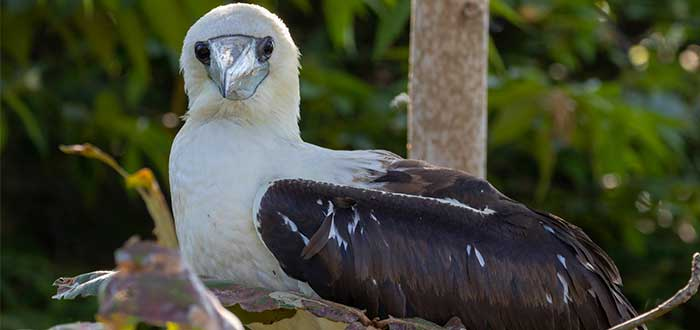
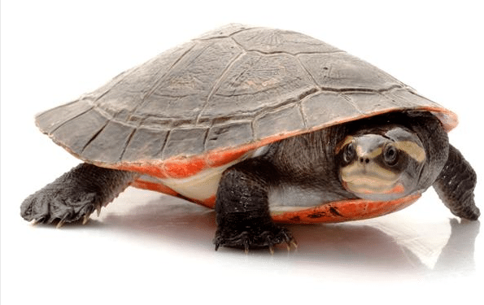
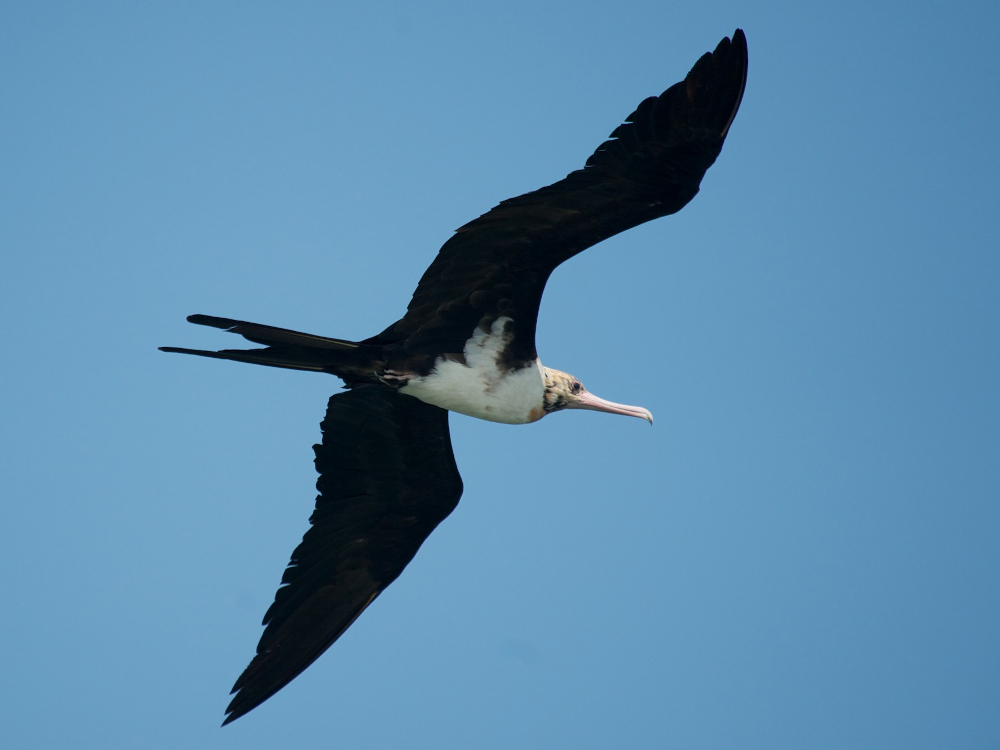
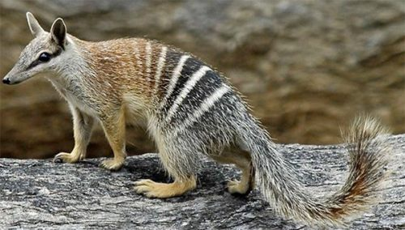
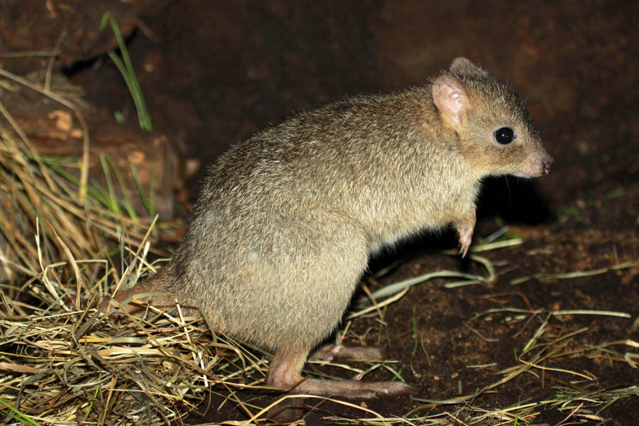

Alcatraz De Abbott
El alcatraz de Abbot es uno de los animales de Australia en peligro de extinción.
Esta ave es una especie endémica del océano Índico que anida únicamente en la Isla de Navidad,
en Australia. El alcatraz de Abbott mide unos 79 centímetros de longitud y pesa 1,46 kilogramos;
y su plumaje negro y blanco lo distingue de otras aves que habitan en la zona
El alcatraz de Abbott hace su nido en árboles de 150 metros de altura y se alimenta de calamares
y peces que caza en el vuelo. En la Isla de Navidad hay una población de, aproximadamente,
3000 alcatraces. Sin embargo, la población original ha ido decreciendo debido a la tala ilegal
en su hábitat. Otra de las principales amenazas para estas aves son las hormigas locas amarillas,
que desmejoran la calidad de los espacios que habitan.

Tortuga De Cuello Corto
Esta pequeña tortuga es otro de los animales de Australia en peligro de extinción.
La tortuga de cuello corto es endémica de Australia Occidental y se descubrió por primera vez
en el año 1889. Su peso varía entre los 0,41 kilogramos y los 0,55 kilogramos,
y pueden llegar a medir entre 135 milímetros y 155 milímetros. También, posee un caparazón aplanado,
que parece cuadrado, y se caracteriza por ser de color amarillo-marrón a negro.
La tortuga de cuello corto habita en pantanos de suelo arcilloso, en donde construye su nido.
Su alimentación se basa en animales vivos como larvas de insectos, lombrices y renacuajos.
Cuando la temperatura sube y los pantanos se secan,
aumenta su ingesta de alimentos para acumular grasa que le permita sobrevivir durante los meses
de inactividad

Demonio De Tasmania
El demonio de Tasmania es otra especie amenazada de la fauna Australiana.
Este marsupial carnívoro mide, aproximadamente, 800 milímetros y eso lo convierte en el marsupial
más grande existente en la actualidad. Su peso varía entre los 6 kilogramos y los 8 kilogramos.
Se caracterizan por su cuerpo robusto y achaparrado con una cabeza grande y una cola bastante larga.
La población de demonios de Tasmania se ha visto afectada por la expansión de los dingos
y por la llegada de los aborígenes australianos hace cientos de años pero,
en la actualidad, su principal amenaza es una enfermedad mortal que les causa tumores faciales.

Rabihorcado De La Christmas
Esta ave es otra especie australiana en peligro de extinción. El rabihorcado de la Christmas
es una especie endémica de la Isla de Navidad que se caracteriza por su gran tamaño
(puede llegar a medir entre 90 centímetros y 100 centímetros),
por su plumaje negro, y blanco en el vientre, así como por la franja blanca en la parte de arriba
del ala.
El rabihorcado de la Christmas pesa, aproximadamente, 1,5 kilogramos y se alimenta mayormente
de peces, pero también suele robar la caza de otras aves. En la Isla de Navidad hay
una población que varía entre los 2400 y los 4800 ejemplares. Antiguamente,
la población era aún mayor, pero la destrucción de su hábitat
y la depredación de la hormiga loca amarilla han causado que muchos ejemplares desaparezcan.

Numbat
El numbat es otro de los animales de Australia en peligro de extinción.
Nombrado el animal estatal de Australia Occidental, el numbat es un animal
pequeño que mide entre 35 centímetros y 45 centímetros y pesa entre 280 gramos y 700 gramos.
Su pelaje es de color gris suave, pero algunos ejemplares tienen un pelaje de color marrón rojizo
y poseen una cola larga y frondosa, que es de la misma medida de su cuerpo.
Su hábitat se ha visto amenazado por la depredación de animales introducidos
a Australia y por la tala de los árboles muertos de eucalipto para el cultivo
de nuevos ejemplares.

Canguro-Rata Colipeludo
Este pequeño marsupial es otro de los animales de Australia a punto de desaparecer.
El canguro-rata colipeludo mide 36 centímetros y puede llegar a pesar 1.8 kilogramos.
Su pelaje de color mixto es muy peculiar: marrón grisáceo en la parte superior y gris
pálido en la parte inferior; su cola peluda es un poco más oscura con una franja distintiva
de color negra.
Esta especie es nocturna y durante el día descansa en nidos que construye en pastizales y bosques.
Su alimentación se basa en hongos, que consigue excavando; semillas e insectos.
Antiguamente, el canguro-rata colipeludo era considerado una peste y eso hizo que gran parte
de la población fuera exterminada. Por otro lado, los depredadores introducidos al territorio,
algunas enfermedades y el desarrollo de la agricultura han hecho que la población disminuya año tras
año.

Bilby Mayor
También conocido como Bandicut conejo, el bilbi mayor es uno de los principales
animales de Australia en peligro de extinción y el más grande de todos los bandicuts.
Algunos ejemplares pueden llegar a pesar entre 0,8 kilógramos y 2,4 kilógramos en estado salvaje
y 3,7 kilógramos en estado de cautiverio. Poseen un pelaje muy tupido de color grisáceo en el lomo,
y blanco en el vientre, que resalta con su cola negra y blanca.
El bilbi mayor suele construir su madriguera en zonas áridas de Australia. Allí caza lagartijas,
gusanos, larvas, arañas y otros pequeños insectos; además, recolecta frutas y semillas.
Esta especie es extremadamente rara y la población empezó a disminuir cuando los europeos
colonizaron el territorio australiano y los campos empezaron a utilizarse para la cría de ganado.
También, fue víctima de los depredadores y de los europeos que empezaron a cazarlos para usar su
piel.

Wombat
También conocido como wombat del norte, este pequeño mamífero es otro de los animales
en peligro de extinción. Este ejemplar es uno de las tres especies de wombat que
habitan el territorio australiano y es un poco más grande que el wombat común.
Puede llegar a medir 35 centímetros de alto y un metro de alto; y a pesar 40 kilogramos.
El wombat de nariz peluda del norte habita en madrigueras y se alimenta de raíces y pasto
que recolecta por las noches. La población se ha visto amenazada por los depredadores
y la competición por comida con animales más grandes. La práctica de la agricultura en Nueva Gales
del Sur,
Victoria y Queensland; y la introducción de búfalos al país, han dañado gravemente su hábitat
natural.

Australia Y Su Amplia Variedad De Animales En Peligro De Extinción
Australia es un país lleno de ecosistemas en donde se pueden encontrar una amplia variedad de especies y
es que no en vano,
la fauna australiana es considerada una de las más exóticas del mundo. Sin lugar a duda,
los animales más representativos de Australia son el canguro, el ornitorrinco y el koala,
pero debes saber que los parques nacionales de todo el territorio australiano
son el hogar de otras interesantes especies. Al igual que en muchos lugares del mundo,
las acciones irresponsables del ser humano han afectado los ecosistemas australianos y,
con el paso de los años, muchos animales de Australia han pasado a ser considerados en peligro
de extinción.
El gobierno de Australia ha iniciado acciones para proteger a las cientos de especies
que ocupan el territorio. Por esa razón, los parques y reservas naturales de todo
el país se consideran un patrimonio y se encuentran extremadamente protegidos. Seguramente,
siempre has querido conocer Australia y queremos decirte que cuando tomes tu vuelo y aterrices,
habrás llegado a uno de los mejores destinos verdes del mundo.
AYUDANOS A SALVAR ESTOS ANIMALES, DONANDO A NUESTRA FUNDACION